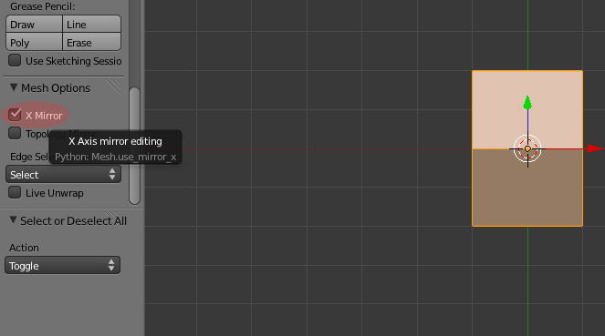
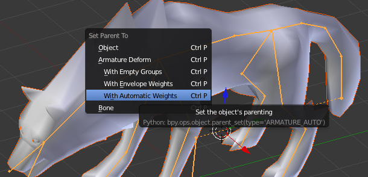
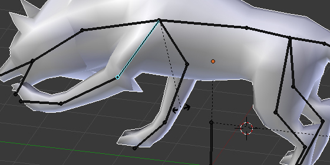
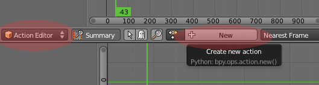
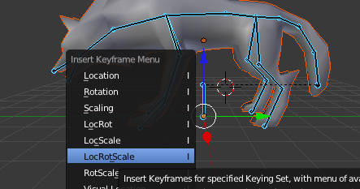
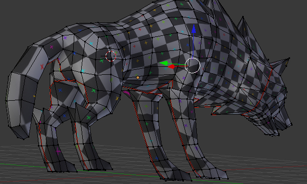
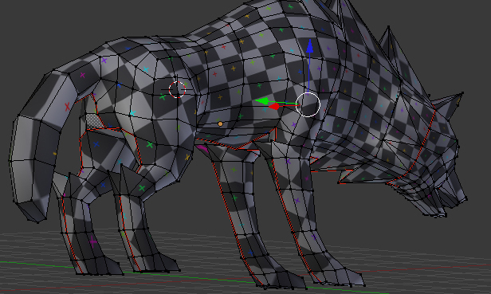
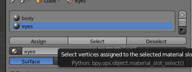
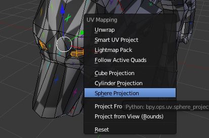
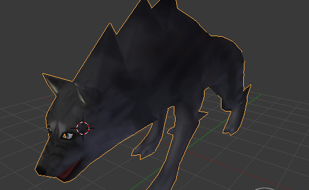

to make this example you need to know basic of modeling like extending faces / merge vertexes / (move vertex / edge / face) / etc. |
Preview

Step 1 - Prepare
Open Blender with new Scene
Add a simple Cube. To make it press shift-a and select Cube

“t” key open tool window. let’s open it and set x-mirror ON

Subdivide this cube to get more faces
this can be also done via modifiers → subdivision surface (it will be later)

“n” key open second toolbar with useable options. let’s load an example image to help us build Warg. I found a nice warg image on devian art.

make simple Warg Shape like on images


Step 2 - Modeling
in tool window(“t”) is a smooth tool that can help model the warg.

to easly add edge loop use “loop cut and slide” tool that work that way:


Go to modifiers and add Mirror surface

add some details like eyes / etc.
need to know how to use extend faces(key “e) and merge extended face. |


to use smooth shading just set it in tool window.

Apply modifier. just press “Apply” button in Mirror modifier.
Remove doubles (it removes vertexes that are too close each other).

Step 2 - Armature
Shift-a and add armature in Object Mode.
shift-a to add a bone in Edit Mode |

tail should be done in other way. Start to build skeleton from start of the tail (not end) |

Show names and change armature view (if you like)

set Names for bones (via properties window or “n” option window)

Select left side bones only, press shift-d to copy them, and make mirror. Remember to have cursor in 0,0,0 and have settings like on image (if not then you will need just to move copied bones manually)

Press “w” and select “flip names”


In Object Mode:
Select Model
With SHIFT select armature
Press “p” and select “with automatic weights”

Try move a leg in Pose Mode
Pose Mode work like Edit mode, use “r to rotate a bone. using “x/“y/“z after “g/“r/“s will also work here like everything else. |

Go to Animation View

Add a new action

Select all bones in Pose Mode and apply location / rottion / scale. To do it press “i” and select it like on image:

alt-r / alt-g / alt-s – clear rotation / location / scale |
there is possibility to copy poses

and also to copy them in mirrored pose

in action editor you can easly remove / move / scale frames

If animation work not linear (and you don’t like it), then you can change it in Curve editor window

Thats all for Animations, for more just Read JME wiki / documentation.
Step 2 - Texturing
Move armature to second layer. press “m” to make it.

In edit mode, need to mark seam on Edges to prepare model for texturing. press ctrl-e to make it.

do it similar to this (or you can make it better):

 

Press “u” and select first option “unwrap”
In UV window you can minimize stretch (minimize stretch change with mouse wheele).

make a 2 geometries for model:
body (contains faces for body)
eyes (containes faces for eyes)


for eyes you can use “Sphere projection for unwrap”

Select texture image

under “n” option window, set like on image to see texture. (ViewPort need to be set as solid, ViewPort is near Object/Edit select)

Just make texture of model (using Texture Mode – where Object / edit mode is)
under “t tools you can change color / size / etc of brush |

Using 2d tool like Gimp / Photoshop, use filter/modifier to get nice looking skin

Now only need to export via Ogre Mesh or just via Blend file (using SDK).
For eyes and body, use separated j3m files, then set them in SceneComposer.
also don’t forget about NLA editor and set off envelopes to make animations work! |
here are docs:
Done!